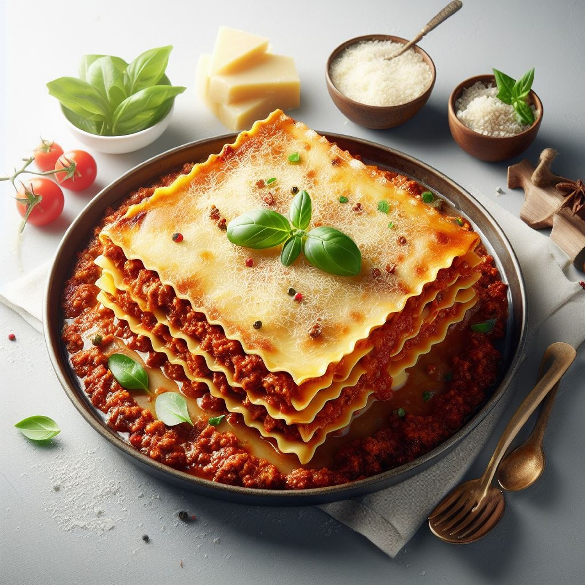

Molten Lasagna
Layers of Celestial Indulgence
Indulge in the divine symphony of flavors with Molten Lasagna by Odin, a culinary masterpiece that transcends the ordinary. This celestial creation, guided by the wisdom of Odin himself, takes the traditional lasagna to new heights. Imagine layers of pasta sheets, each one cradling a molten core of velvety cheese, rich meat sauce, and a secret blend of celestial spices. As this decadent dish emerges from the oven, the aroma alone is enough to transport you to a realm where each bite is a moment suspended in culinary bliss. The juxtaposition of the crisp top layer with the luscious, molten center creates an unparalleled texture, making Molten Lasagna by Odin a heavenly delight for the senses.
Crafted with care and precision, this recipe captures the essence of indulgence with high-quality ingredients harmonized by Odin's whispered wisdom. The marriage of savory meat sauce, delicate pasta, and a celestial blend of cheeses results in a dish that's not just a meal but a celestial experience. Molten Lasagna by Odin is an ode to the gods, inviting you to savor the extraordinary layers of flavor that unfold with each glorious bite.